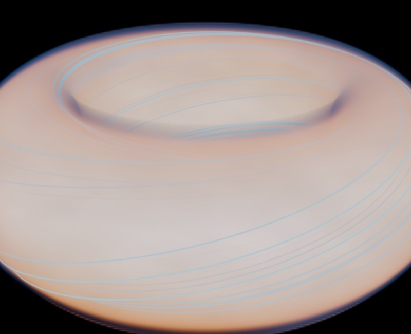
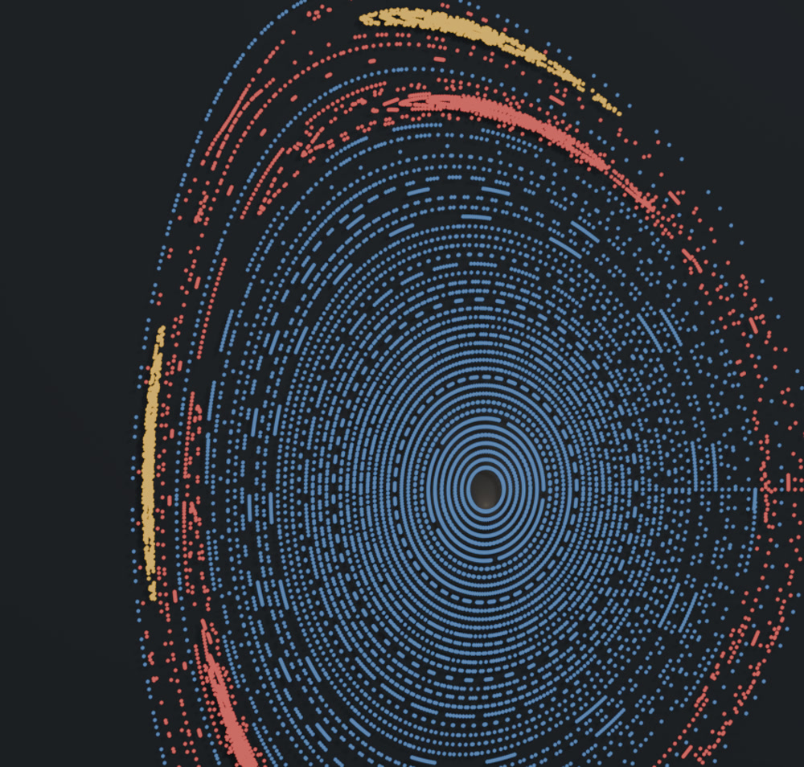

ML-хакатон · ФМФ КПІ · 2026
Картинка — ще не рівновага
Як перевірити, чи прогноз машинного навчання узгоджується з фізикою плазми
Оцінювання реконструкції магнітного потоку токамака
Парадокс
Високий R². Чи це фізика?
Карта майже збігається з еталоном за R², але її нев'язка перевищує контрольний поріг gref = 0,6341, отриманий з еталонного поля з 1% шуму.
Чи може майже ідеальна картинка приховувати фізичну помилку?

Об'єкт дослідження
Усередині магнітної пастки
У токамаку плазму утримує магнітне поле. Його геометрія задає поверхні магнітного потоку ψ, які й відновлює модель.
Пояснювальний 3D-рендер команди. Це візуалізація, а не кадр експериментального вимірювання.
Фізична перевірка
Метрика бачить карту, фізика — похідні
Рівняння Ґреда—Шафранова містить другі просторові похідні. Невелика похибка карти може сильніше проявитися в рівнянні; тут ми вимірюємо її через нев'язку g(ψ).
Експеримент
Перевірка на розрядах DIII-D
Порівняв чотири моделі зі стартового набору за офіційним балом S, а потім оцінив їх із фізичним контролем g.
Метод
Поріг — до порівняння моделей

Переріз Пуанкаре · окремий ілюстративний рендерСтійкість порівняння оцінював бутстрепом за розрядами. Результати — діагностичний експеримент на публічному тестовому спліті.
Початковий рейтинг
UNet попереду — за схожістю
Офіційний композитний бал S; це не окрема оцінка фізичної рівноваги.
Але що приховано за близькими балами UNet і MLP?
Різниця, якої не видно в рейтингу
Майже однаковий S — різне g
Різниця балів UNet і MLP: −0,0015. 95% довірчий інтервал [−0,0121; +0,0089] охоплює нуль — за S їх не вдалося надійно розрізнити.
Контрольний поріг gref = 0,6341.
Діагностична перевірка
Фізичний шлюз змінює рейтинг
Жорсткий шлюз обнуляє бал вище порога; сигмоїдний зменшує його поступово. Це не офіційний бал хакатону.
Практичний висновок
Показувати дві оцінки поруч
Схожість карти — разом із перевіркою фізичної узгодженості.
Шлюз допоміг побачити різницю, яку один лише бал S приховував у цьому експерименті.
Поріг слід визначати на контрольних даних і фіксувати до фінального тесту. Сигмоїда може пом'якшити різкий перехід біля межі.
Межі результату
Що ще треба перевірити
Це не новий офіційний бал. Шлюз — діагностичний експеримент; правила хакатону оцінюють за S.
Публічний тест. Розряди #060–#067 вже переглядалися, тому є ризик підглядання в тест.
Нев'язка не бачить усього. Вона може пропустити гладку похибку або усічення PCA.
Наступний крок: зафіксувати шлюз і перевірити його на нових розрядах разом із точністю карти, топологією та невизначеністю.
Головна думка
Картинка — ще не рівновага
Оцінювати потрібно і схожість прогнозу, і його фізичну узгодженість.
Дякую. Готовий відповісти на ваші запитання.